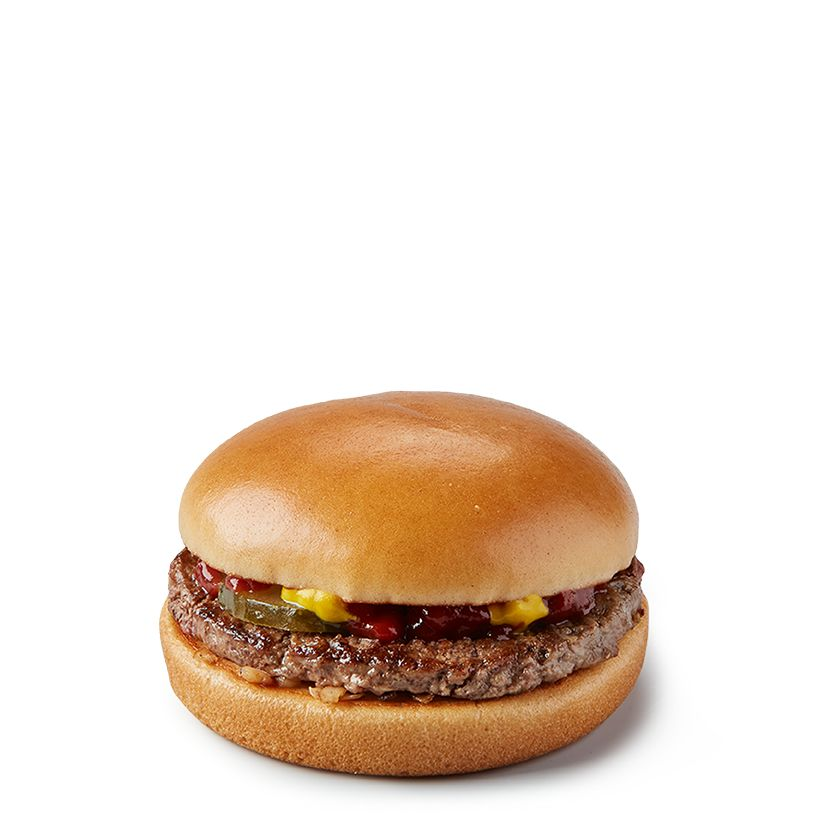

<!--1 გააკეთეთ sololearn Text Formatting'ის ჩათვლით 
გავაკეთ-->


<!--2 გადმოწერეთ თქვენი 3 საყვარელი ცხოველის ფოტო და გამოიტანეთ საიტზე-->


<!--3 გადმოწერეთ თქვენი 3 საყვარელი საჭმელის ფოტო და გამოიტანეთ საიტზე-->




<!--4 დაწერეთ რაიმე ტექსტი და გამოიყენეთ formatting tag'ები მნიშვნელოვანი ტექსტების highlight'ისთვის-->
<html>
<head>
    

<h1>Random txt</h1>


<b>ჩემი სახელია ნიკა</b>, 
<i>მე ვცხოვრობ აქ</i>,
<mark>მე ვსწავლობ გოაში</mark>, 
<u>მე მიყვარს ქალაქი</u>, 


</body>
</html>


<!--5 ახსენით რა განსხვავებაა b და strong თეგებს შორის-->
<!--<b> მხოლოდ ვიზუალური ეფექტია (მუქი შრიფტი)-->
<!--<strong> ხაზს უსვამს ტექსტის მნიშვნელობას-->


<!--6 ჩამოწერეთ ყველა Formatting tag და მიუწერეთ რას აკეთებს-->

<!--Bold (მუქი ტექსტი). გამოიყენება ტექსტის ვიზუალური მუქისთვის-->
<!-- Strong importance (ძალიან მნიშვნელოვანი ტექსტი). ხაზს უსვამს ტექსტის მნიშვნელობას, მუქი სტილით.-->
<!--Italic (იტალიკი ტექსტი). გამოიყენება ტექსტის დახრილ ფორმატში გამოსატანად, სემანტიკური მნიშვნელობის გარეშე.-->
<!--Underlined text (ხაზგასმული ტექსტი). ტექსტს ხაზი გაუსმება.-->